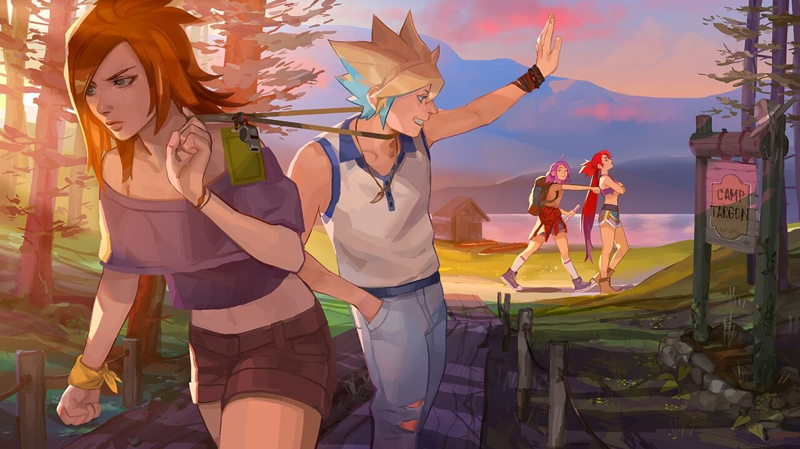

CAPITULO 4
¿Quién necesita un mapa?
Encuentro el último folleto atascado en el hueco de un árbol. En vez de agacharme a recogerlo, me dejo caer sobre un montón de agujas de pino y me apoyo contra el árbol. Delante de mí tengo el lago, pero ahora que he dejado de moverme me doy cuenta de que no tengo ni idea de dónde estoy.
Aprieto mi espalda contra la corteza rasposa. Este viaje no está saliendo como esperaba. Ya no es que no trabajemos como equipo, es que ni siquiera estamos juntas.
Tengo la cara ardiendo. La garganta se me está haciendo un nudo. El centelleo de la luz sobre el lago se difumina un poco. Puedo sentir cómo el agua inunda mis ojos.
Me pongo a rebuscar en la pila de papeles que he recogido para apartar la mente de mi repentino festival de lágrimas.
—Y no hay ni un solo mapa. —Dejo que salga toda mi frustración con un gruñido—. ¿Cómo voy a ser la líder si ni siquiera sé dónde voy?
—Bah. Los mapas están sobrevalorados.
Una voz de hombre destaca sobre el ruido de fondo de los campistas a lo lejos. Miro hacia arriba. Perfecto. Es el tipo rubio y mono del séquito estelar de Ahri. Me levanto con rapidez y me limpio los ojos con el dorso de la mano.
—Si en realidad crees que necesitas uno, casualmente llevo este encima. —Me da un mapa del campamento ligeramente arrugado por el viento. La ubicación de mi grupo está marcada claramente con un círculo y un número con la caligrafía perfecta de Syndra. Muestra una sonrisa ladeada—. Se me da bien encontrar cosas perdidas. Soy Ezreal, aunque puedes llamarme Ez.
Asiento mientras intento controlar mi respiración. Todavía sigue sonriendo. ¿Está tonteando conmigo? Miro a mi alrededor. Saca un pañuelo del bolsillo y me lo pasa.
—Gracias —murmuro nerviosa. Hasta bajo la sombra de los pinos sus ojos son de un azul intenso—. A lo mejor puedes ayudarme a encontrar a mi equipo. –Señalo a los árboles a nuestro alrededor. Esta pequeña esquina del campamento está vacía, salvo por nosotros dos—. Parece que todo el mundo está perdido, excepto tú y yo.
—Me parece perfecto. —Se aparta un mechón rubio de los ojos con la mano y señala el camino de vuelta con una reverencia caballerosa—. Lux, ¿verdad? Eso es luz, ¿no?
—Sí —digo asintiendo. Si él supiera—. A mi madre le gustaban las lámparas de escritorio. —Noto cómo mi espontánea confianza vuelve, la misma por la que siempre se queja Jinx por ser irritante. Me percato y observo que su sonrisa arrogante titubea por un momento. No está seguro de si le estoy tomando el pelo. Me toca a mí sonreír ahora. ¿Estoy sonriendo demasiado?
—Es broma —añado.
—Bueno, las lámparas molan —dice un poco aliviado—. Pero no son mi tipo de luz favorito.
—¿Tienes un tipo de luz favorito?
—Claro, ¿no lo tiene todo el mundo?
La sonrisa engreída vuelve a aparecer. El pequeño sendero que hemos tomado está a punto de unirse al camino amplio que va desde el lago hasta la parte principal del campamento.
—¿Me lo vas a contar o voy a tener que adivinarlo? —Es absurdo, pero se me ha olvidado completamente lo lamentable que me sentía hace unos instantes. Por primera vez desde que llegué el campamento, no me preocupa nada, ni siquiera tropezarme conmigo misma.
En ese mismo momento aparece Jinx, con una sonrisa traviesa y mechones empapados pegados en la cara. Esa mueca se acentúa en el momento en el que Ezreal emerge de las sombras.
—Hola, Lux, colegui. ¿Has encontrado a un amiguito nuevo?
La palmada que Jinx me da en la espalda me devuelve a la realidad y casi me asfixio con mi propia lengua al intentar responderle.
—Jinx, este es Ez —toso, intentando recuperar el aliento—. Ez, esta es Jinx.
Ezreal le extiende la mano a Jinx. Esta acepta el desafío y lo intimida, apretándole los dedos y agitando su mano hacia arriba y abajo, como si de un concurso de pulsos al revés se tratase. Para sorpresa de Jinx, Ez se toma con calma el extraño saludo.
Jinx tira de él para estrechar la distancia.
—¿Cuáles son tus intenciones con nuestra Lux, si puede saberse? —pregunta en un susurro amenazante que todos escuchamos con claridad.
Noto cómo mi cara se pone más rosa que mi cabello.
—Estábamos... Estábamos... —tartamudea Ez—. Estábamos hablando sobre nuestro tipo favorito de luz. ¿Tienes...? ¿Tú tienes uno?
Bien salvado, Ez. Si hay algo que puede distraer a Jinx, eso es hablar de sí misma.
—Ah, eso es fácil —respondió Jinx. Tras ello, decide soltar un poco la mano de Ez y dejarla libre. Ez abre y cierra los dedos, como comprobando si todavía funcionan.
—¿En serio? —digo sorprendida—. ¿Tienes un tipo de luz favorito?
Jinx se vuelve hacia mí.
—Pues claro. ¿No lo tiene todo el mundo?
Ezreal se encoge de hombros. Otra vez esa sonrisa engreída.
—Ezreal, ¿va todo bien? —pregunta una voz tranquila. Ya estamos todos. La pelirroja alta, la segunda estrella en la constelación de molabilidad de Ahri, se acerca desde el camino principal del campamento. No parece muy contenta con ninguno de nosotros. Sobre todo con Jinx.
—No pasa nada, Sarah —responde Ezreal, intentando apaciguar el severo desdén de la pelirroja.
—Hola, me llamo Lux. —Me limpio la mano en los pantalones y se la ofrezco como saludo. Veo cómo sus ojos se entrecierran y, de repente, me siento como si estuviera bajo una lupa gigante. Y, por supuesto, cuando me pongo nerviosa no puedo dejar de hablar. Las palabras empiezan a salir como si alguien se hubiera dejado el grifo abierto—. Eh... Encantada de conocerte, Sarah. ¡Tu pelo mola mucho! A mí no me quedaría bien el rojo, pero a ti... Vaya.
—Miss Fortune —interrumpe—. Sarah es para los amigos. —Por cómo me mira creo que no entro dentro de esa categoría.
—Ah, vale. Me llamo Lux. ¿Lo he dicho ya? Quería ir a por los tentempiés del equipo y me perdí un poco... —Busco en uno de los folletos que tengo en la mano la información que sé que he visto hace unos minutos—. Eso, tentempiés, justo aquí en la tienda comedor. Parece que son galletas con pepitas de chocolate y... y... naranjas.
—Odio las naranjas —replica Miss Fortune con frialdad. Mira a Ezreal—. Ahri quiere que repasemos el perímetro antes de que oscurezca.
—¡Sí, mi capitana! —responde Ezreal en tono irónico con un saludo militar.
Miss Fortune pone los ojos en blanco y comienza a caminar de vuelta al campamento. Jinx se pone a tirar de mí en la dirección contraria.
—Te veo luego, Lux —dice Ezreal antes de correr tras ella.
No puedo evitarlo; tengo que decírselo.
—¡No me has llegado a decir tu favorita!
Se detiene, se aparta el pelo de los ojos y junta las manos.
—La luz estelar —grita como respuesta. Incluso desde lejos puedo ver su sonrisa ladeada con claridad. Se da la vuelta y alcanza rápidamente a Miss Fortune.
—Hum —musita Jinx pensativa—. Estaba segura de que iba a decir un doble arcoíris.
Ahora soy yo la que pongo los ojos en blanco. Le doy un golpecito en el brazo.
—Venga, vamos a buscar esas galletas.